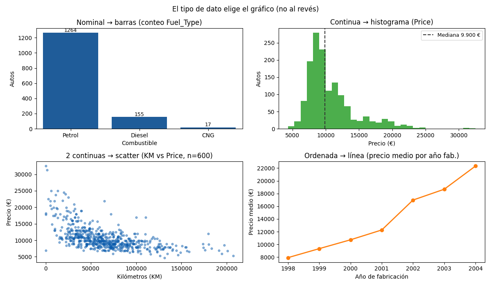

Bloque B · Análisis Exploratorio de Datos · Lección 0009 · mié 26 ago
Qué gráfico para qué dato
Win de hoy: elegir el gráfico según el tipo de dato con la regla de Wilke: nominal → barras, continua → histograma, dos continuas → scatter, ordenada → línea. Todo con Toyota.
1 · La regla de oro: el dato elige el gráfico
Cada gráfico es una codificación visual:
traduce números a largo, posición o color. Si la codificación no calza con el tipo de dato, el gráfico miente
sin querer: un histograma de Fuel_Type no tiene sentido (¿qué es “medio combustible”?), y una torta
con 319 modelos es sopa de letras. La tabla que resuelve el 90 % de los casos:
| Dato | Gráfico | Ejemplo Toyota |
|---|---|---|
| Nominal (etiquetas) | Barras (una por etiqueta) | Conteo de Fuel_Type: 1264 / 155 / 17 |
| Continua (una sola) | Histograma o boxplot | Distribución de Price (mediana 9.900 €) |
| Dos continuas | Scatter (nube de puntos) | KM vs Price: la nube que baja |
| Ordenada (tiempo, edad) | Línea | Precio medio por Mfg_Year (1998→2004) |
En vocabulario del programa: una columna es dato univariado, dos son bivariadas, y tres o más son multivariadas (esas llegan en la 0012).
El “nominal” y “continua” de la tabla son los tipos de cátedra (clase EDA, p. 8): discreto, continuo, categórico y ordinal. Mismo mapa con otras palabras: si tu dato es categórico, contalo; si es continuo, mirá su forma.
2 · Nominal → barras: Fuel_Type al desnudo
Las etiquetas se cuentan, y los conteos se comparan con largos de barra. Las 3 barras muestran el desbalance de un vistazo: Petrol aplasta (1264), Diesel acompaña (155), CNG es anecdótico (17). Regla que vuelve en la 0011: el eje de un gráfico de barras arranca en 0, porque el ojo compara largos.
3 · Continua → histograma: la forma de Price
El histograma
parte el rango en intervalos (bins)
y cuenta casos por intervalo: revela forma, centro y cola. Price muestra pico cerca de 8–10 mil y cola
derecha hasta 32.500 (el sesgo de la 0006, ahora visible). Alternativa del mismo dato: el boxplot de la 0001,
que resume la misma forma en 5 números.
4 · Dos continuas → scatter; ordenada → línea
El scatter
pone un punto por auto: la nube KM vs Price baja hacia la derecha (más km, menos precio) y anticipa la
regresión de Bloque D. Y cuando hay orden natural (año, mes, tramo de edad), la
línea
une los promedios: el precio medio sube con el año de fabricación. Ojo: la línea sugiere evolución, no causalidad.
5 · Figura: el catálogo 2×2

Regenerar la figura (mismo resultado versionado en assets/img/toyota/):
python scripts/make_figures.py --only que-grafico-para-que-dato6 · Quiz (auto-chequeo inmediato)
7 · Fuente primaria y cierre
Para profundizar (1 fuente): Wilke, Fundamentals of Data Visualization — capítulos de codificación visual y elección de gráfico (clauswilke.com/dataviz, también en RESOURCES.md del curso). La referencia del curso para el Bloque B (visualización).
¿Algo no quedó claro? Preguntame al agente: qué gráfico usar para tu columna, cuántos bins elegir, o cuándo el boxplot le gana al histograma. Esa pregunta vale más que releer.
Siguiente en el orden del Bloque B (misma clase, mié 26): 0010 Color con criterio — paletas que informan.